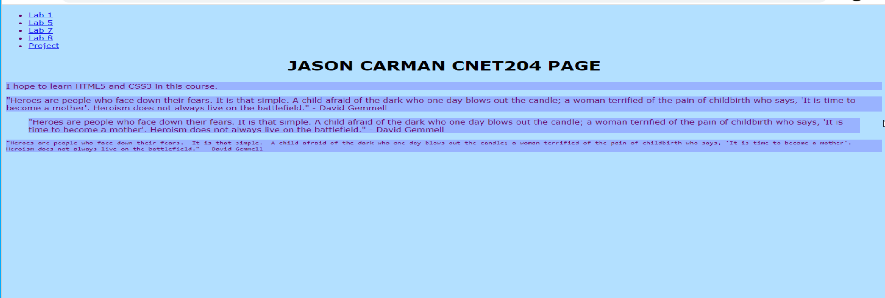

Lab 6 - Hyperlinks & Navigation
Overview
This week's lab will cover the following:
- Learning how to insert hyperlinks
- Learning how to format ordered and unordered lists
- Learning how to apply classes & ids and describe when to use them
Creating your Github Repo for your Labs
Use the following link to set up your labs 6-10 repository. You will be using this for labs the rest of the labs in the course (including this one), and for Assignment 1.
Ordered & Unordered lists
The only difference between ordered and unordered lists is how you open and close them, and the way they appear (and a very slight difference in code). Ordered lists appear as numbered by default. Unordered lists appear as bulleted by default. Ordered lists open with the <ol> tag. Unordered lists open with the <ul> tag.
Creating an unordered list
Open your index.html, and add an unordered list to very top of the body section, below the opening body tag. It's a good idea to close this immediately too, then go back and fill in the middle. This way it's less likely you'll get to the end of the list and forget to close it.
<ul> </ul>
Adding items to our list
The inner html portions of ordered and unordered lists work exactly the same. Each item in the list is encapsulated by <li> tags. Add an item to your unordered list with the text "Home" using the following code sample:
<li>Home</li>
Feel free to refresh your page in the browser to see how it appears.
To do:
Using what we just learned, add additional list items for About, Form & Media. We'll create hyperlinks with these in the next step.
Hyperlinks
Hyperlinks are an important building block of the Internet. They're one of those key technologies that without which, the Internet wouldn't work. Hyperlinks allow us to link pages to other pages on the internet. They can take a couple different formats:
- Internal
- Linking to another page within your website.
- External
- Linking to another website.
Hyperlinks can also be referred to as either relative or absolute.
- Absolute hyperlinks
- Provide a full path to the resource, starting with http:// or https://.
- Relative hyperlinks
- Are relative to where your page exists on the server. These do not begin with http:// or https://.
Relative hyperlinks are preferable when linking to other pages on your own site, as if we decide to change the directory structure or migrate to another server they'll still work; whereas an absolute hyperlink will not. See below for examples.
Absolute link to Lab 4 - https://jmcarman.github.io/cnet204.github.io/index.htmlRelative link to Lab 4 - index.html
Notice both of the above links take you to the instructions for Lab 4. If you view the page source, you'll notice they're different links. If I were to move this page and the Lab 4 instructions to a new location, as long as they stay in the same folder, the relative link would still work; the absolute one would not.
Hyper links can also (for the purposes of creating a naviation menu) link to null or nothing. This is always done in a navigation bar for the entry pertaining to the current page. There are a couple ways of doing this, the simplest of which is to create the link with the reference of "#" (without the quotes). Add the following code inside the list item home you created earlier, surrounding the text so it appears as follows.
<a href="#">Home</a>
To do:
Add relative hyperlinks for the following pages. They won't exist yet, but we'll create them in the remaining labs.
- About as about.html
- Form as form.html
- Media as media.html
The main tag
The main tag is new to HTML5. It is a structural tag used within the body to separate the main content from the navigation bar (which we'll be creating next).
To do:
- Add an opening <main> tag at the top of the body, but below the list of hyperlinks you created earlier
- Add a closing </main> tag at the bottom of the body, just above the closing body tag
Meta Tag - Viewport
Adding the viewport attribute to the meta tag provides the browser instructions on how to scale the page based on the size of the device it's being viewed on. For more information, see w3schools.
Adding the viewport attribute
Add the following code to the head section of your index.html. You will need to add this to all future pages you create as well.
<meta name="viewport" content="width=device-width, initial-scale=1.0">
Navigation
Most of what makes a navigation bar appear as such is done through the use of CSS. There are several different approaches to how to create and style a navigation bar, this method is just one of those. The first thing we need to do, is use the nav tag to specify what elements of our page will be part of the navigation bar. This tag is going to surround the list of hyperlinks you created at the top of the page earlier.
To do:
- Add an opening <nav> tag above the opening <ul> tag you added earlier in the assignment
- Add a closing </nav> tag below the closing <ul> tag you added earlier in the assignment
Notice if you save and refresh your page the list of hyperlinks we created doesn't appear any different than it did before you added the nav tag. That is because the nav tag is simply used to tell the browser that the block of text within belongs together. It also allows us to uniquely identify that block and it's internal elements, so we can apply css to change it's appearance.
Classes & IDs
Now's a good time to introduce the concept of classes and IDs. Both are used to uniquely identify tags, so you can apply CSS to that specific tag; For example, if you wanted to change the background colour of one paragraph on the page, but not the others you'd assign an ID to it. Both classes and IDs are used to do the same thing, the main difference being if you intend to use that style only once, use an ID. ID's should be unique. If you're going to apply that style to multiple elements, on multiple pages, it's best to use a class.
To assign a class, you add the paramater class to the opening tag that you wish to assign it to. For an ID, simply change the parameter to id. Then assign it a name accordingly.
An example
Remember how we added a hyperlink to the current page that was self referential using the # symbol? Now we're going to add a class to it, so we can stylize that particular hyperlink slightly differently than the rest (in the next lab). Find the link in your navigation that you set the hyperlink reference to #, and add the appropriate code demonstrated below.
<li><a class="active" href="#">Lab 1</a></li>
Completing the Lab
Tip: Validation! Your page should pass the w3schools validation tool.Upon completion of the lab you should have added a menu that links to the other pages that we're going to create this semester. Your page should look similar to the following output (your choice of colours will likely be different). If it does not, go back and complete whatever you've missed.
Exploration Questions
- What tag was used to designate a navigation bar?
- What is a hyperlink used for?
- What is the main tag used for?
- What is a class? ID? When do we use them?